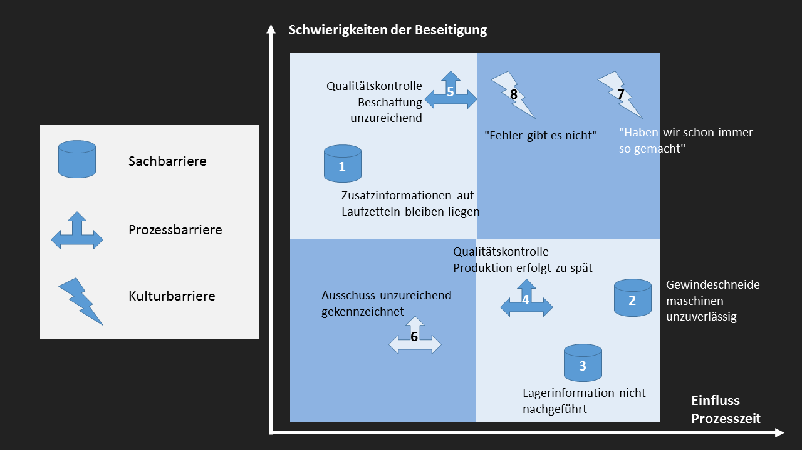
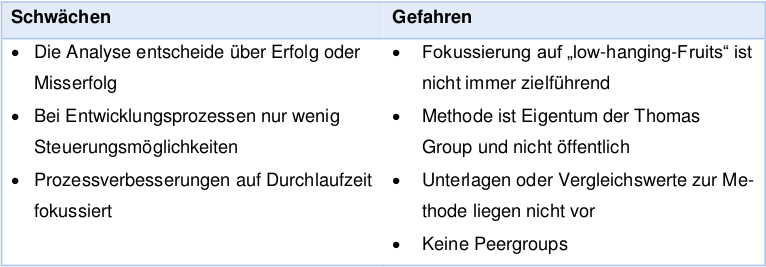

Total Cycle Time
Inhalt
- Ursprünge & Zielsetzung
- Konzept des Ansatzes
- Einführungsvorgehen
- Beurteilung & Fazit
- Diskussion
Ursprünge & Zielsetzung
"Total Cycle Time is the time it takes from the expression of a customer's need until that need is satified" (Thoms P., 1990)
Ursprünge
- Erstmals eingeführt bei "Texas Instruments"
- Eigentum der Thomas Group
- Thomas Group sieht TCT als Vorläufer vieler Prozessverbesserungsmethoden
Zielsetzung
- Optimierung von Geschäftsprozessen
- Fokus auf der Zykluszeit
- Prozesskosten senken
- Termintreue erhöhen
- Kundenzufriedenheit erhöhen
Konzept des Ansatzes
Konzept
- Fokus auf Geschäftsprozesse
- Prozesse verbessern durch Eliminierung störender Barrieren
Fünf Schritte von TCT
- Prozesse darstellen
- Ziele und Kennzahlen festlegen
- Barrieren ermitteln und bewerten
- Barrieren beseitigen
- Verbesserungen messen
1. Prozesse darstellen
- Geschäftsprozesse darstellen mit geeigneter Notation
- Darstellungen dienen als Voraussetzung für den weiteren Ablauf
- Potentielle Barrieren & kritische Faktoren werden bereits notiert
2. Ziele und Kennzahlen festlegen
- Festlegen der Ziele & Kennzahlen
- Prozesszeit (Zykluszeit)
- Prozessqualität (First Pass Yield)
- Termintreue
3. Barrieren ermitteln und bewerten
- Nun werden die Barrieren ermittelt
- Sachbarrieren
- Prozessbarrieren
- Kulturbarrieren
Typen von Barrieren:
4. Barrieren beseitigen
- Barrieren bewerten
- Aufwand schätzen
- Barrieren beseitigen
5. Verbesserungen messen
- Wirkung der Prozessverbesserung soll nun gemessen werden
- Messung durchführen
- Messung vergleichen
- Weitere Schritte klären
Einführungsvorgehen
1. Prozessaufnahme und -Abgrenzung<

2. Ursache-Wirkungs Analyse (Ishikawa Diagramm)

3. Barrieren identifizieren
Vorgehen: Bei Linksgewinde wurden mittels Interviews und Untersuchung folgende Barrieren identifiziert
- Sachbarrieren
- Prozessbarrieren
- Kulturbarrieren
Typen von Barrieren:
3.1 Sachbarrieren

3.2 Prozessbarrieren
3.3 Kulturbarrieren

4. Barrieren bewerten und Portfolio
5. Werkzeuge zur Barrierenbeseitigung
5.1 Barrieren Bewertungsformular
Ziel ist die Low-hangig-Fruits zu erledigen5.2 Messung Prozessverbesserung mit AIP
AIP steht für "Action in Process"
Konkrete Werte vor und nach TCT Optimierung Die AIP Steuerung im Rahmen von TCT Massnahmen hat für Linksgewinde ergeben, dass eine Prozesssteigerung von 150‘000 Schrauben pro Tag möglich sind. Durch Beseitigung der Barrieren ist folgendes Ergebnis enstanden: Vor Beseitigung der Barrieren: Prozessgeschwindigkeit 800'000 Schrauben pro Tag Nach Beseitigung der Barrieren: Prozessgeschwindigkeit 950'000 Schrauben pro Ta
5.3 Plan-Do-Check-Act Ansatz
 >
>
Gesamt Beurteilung & Fazit
Ein Fazit zur TCT Methode zu ziehen ist schwierig aufgrund mehrerer Faktoren:- Es gibt kaum bekannte Anwender von TCT (ausser Texas Instruments)
- Es existieren wenig Quellen und Vergleichsbenchmarks betreffend den Optimierungspotentialen
- Im Deutschsprachigen Raum liegen keine Würdigungen der Methode vor, die herangezogen werden können.
SWOT Analyse für TCT

SWOT Analyse für TCT
Diskussion